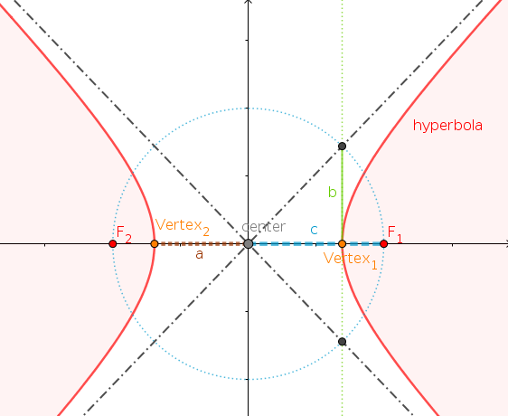
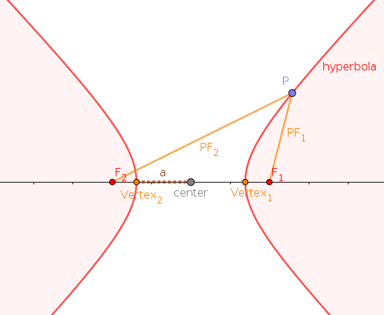
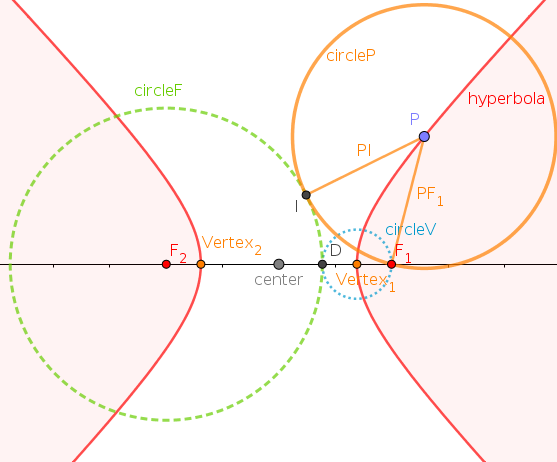
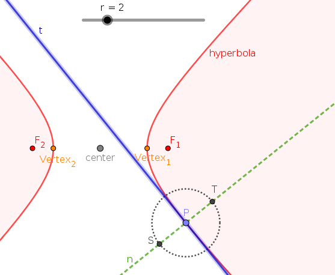
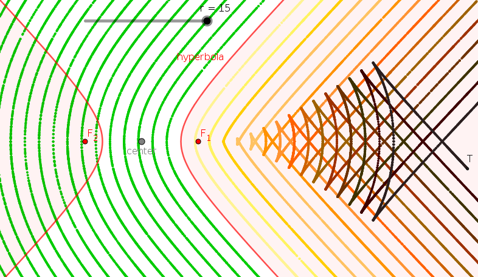
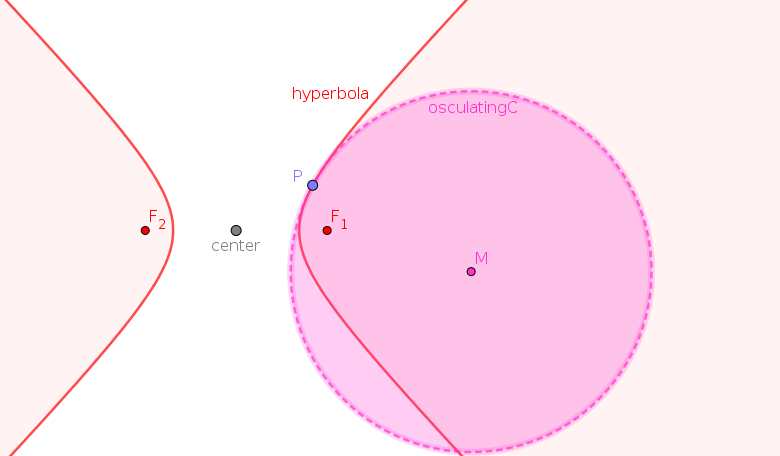

Section 4.1 Hyperbola in GeoGebra
Subsection 4.1.1 Drawing and Parts of a Hyperbola
In GeoGebra, we construct a hyperbola similar to the ellipse, i.e., we first choose two points, called the foci \(F_1\) and \(F_2\text{,}\) together with a point on the hyperbola. We will thus proceed similar to the last section. In particular, it might be useful to choose the two foci \(F_1\) and \(F_2\) to lie on the \(x\)-axis symmetrically around the origin. Again, the third point \(A\) through which the hyperbola passes is only needed if we want to change the hyperbola. We note that the hyperbola actually consists of two curves, called the two branches of the hyperbola.
We use the same vocabulary as for ellipses: The midpoint between the two foci is called the center of the hyperbola. The intersection of the line through the foci and the hyperbola yield the two vertices of the hyperbola. We denote the distance from the center to a focus by \(c\text{,}\) and the distance from the center to a vertex by \(a\) (note that \(c\gt a\) while for the ellipse we had \(c\lt a\)). If you constructed your hyperbola symmetrically around the origin, your foci should be have coordinates \((-c,0)\) and \((c,0)\text{,}\) the center is at the origin \((0,0)\) and the vertices have coordinates \((-a,0)\) and \((a,0)\text{.}\) As before, we call \(a\) the (length of) the semi-major axis and \(c\) the linear eccentricity.

We calculate, respectively construct, a number \(b\) by \(c^2=a^2+b^2\text{,}\) i.e., \(b=\pm\sqrt{c^2-a^2}\text{.}\) Constructively, we get the number \(b\) by drawing a circle of radius \(c\) around the center (this circle will therefore pass through \(F_1\) and \(F_2\)). The perpendicular line through one of the vertices, say the one with coordinates \((a,0)\) on the right, will intersect this circle at the points \((a,b)\) and \((a,-b)\) (similarly, the the perpendicular line through the other vertex will yield the two points \((-a,b)\) and \((-a,-b)\) of intersection with this circle). Now draw the two lines passing through the center (i.e., the origin \((0,0)\) here) and one of these points of intersection we just constructed here (they are the two black dash-diotted lines in the above picture): Can you figure out what their significance is?
Subsection 4.1.2 Definition of a Hyperbola
Let us look at a geometrical definition of the hyperbola: Attach a point \(P\) to the ellipse, and measure the distances \(F_1P\) and \(F_2P\text{.}\) Observe that as you move \(P\) around the ellipse, the difference of the two distances is constant. How is this difference related to the length \(a\text{?}\)
Definition 4.1.1.
A hyperbola is the locus of those points of the plane whose difference of distances to two fixed points \(F_1\) and \(F_2\) (the two foci of the hyperbola) is constant.

The eccentricity \(e\) of the hyperbola is given by \(\frac{c}{a}\text{,}\) i.e., the ratio of the linear eccentricity to the semi-major axis. Since \(c\gt a\) for a hyperbola, we have that the eccentricity is \(e\gt 1\) for any hyperbola. One can now proceed — as we did for ellipses — and construct a directrix for (each branch of) the hyperbola, and thus obtain a second geometrical definition of the hyperbola. However, we will skip this construction here.
Instead we will look at the definition of the hyperbola as an equidistant set. To this end, construct a circle around a vertex passing through its nearest focus, say \(F_1\text{.}\) Intersecting this circle with the major axis (i.e., the \(x\)-axis here) will give two points, namely, the focus \(F_1\) itself and a point we call \(D\) here. Now find the circle around the other focus \(F_2\) passing through the point \(D\) (note that the other focus \(F_1\) is outside this circle), and check that the circle around \(P\) passing through \(F_1\) will always touch the previous circle in exactly one point (called \(I\) in the next picture) no matter where \(P\) is located on (the branch closest to \(F_1\) of) the hyperbola. We thus have arrived at another geometrical definition of the hyperbola that you should be able to complete by yourself now.
Definition 4.1.2.
A branch of the hyperbola is the equidistant set (or midset) to \(\ldots\)

Subsection 4.1.3 Parallel Curves to the Hyperbola
We now only consider the hyperbola with the two foci \(F_1\) and \(F_2\) together with a point \(P\) on one of the branches of the hyperbola. Construct the tangent \(t\) to the hyperbola at \(P\text{.}\) We could again measure angles now (and would get similar results as before for the parabola and the ellipse), but let us look at something else here: the perpendicular line to the tangent through the point \(P\) is called the normal. Get a slider with non-negative numbers, e.g., on the interval from \(0\) to \(10\) (or \(15\)). Use the number from the slider, call it \(r\text{,}\) as radius of a circle around \(P\text{,}\) and find the points of intersection of this circle and the normal. In the following picture, these points of intersection are called \(S\) and \(T\text{.}\)

Using \(S\) and \(T\text{,}\) we can now draw curves that are parallel to a branch of the hyperbola — yes, we are generalizing the definition of "parallel" here: Set your radius \(r\) to a certain value, then turn the "Trace on" for the point \(S\) and/or \(T\text{,}\) and slowly move \(P\) along the branch of the hyperbola. The points you trace out here, all have distance \(r\) from the branch of the hyperbola and thus are on parallel curves to that branch. If you do this carefully for different values of \(r\text{,}\) you will get a picture as below: To the outside of the branch of the hyperbola, you get the (green) curves that you should have expected, however, on the inside something more exciting is happening! From a certain value of \(r\) onwards, the curves we are getting have "kinks". Draw a couple of curves for different values of \(r\) — make a screenshot of your favorite picture you got here! (Note: Unfortunetely, the "trace" functionality in GeoGebra can be a very fleeting construction — one unintended move, and all the traces are gone! Thus it might be worth — if you have the time — to think about and then experiment with other ways to draw multiple parallel curves together.)

Subsection 4.1.4 Evolute of a Hyperbola
Let us now return to a construction we also did for the parabola, namely, finding the evolute of (a branch of) the hyperbola. So, find the osculating circle to the hyperbola at the point \(P\text{.}\) Then find the midpoint \(M\) of that osculating circle. And finally "trace" out the curve this center \(M\) moves about as you move the \(P\) along the (branch of the) hyperbola. This is the evolute. Does the curve you are getting here look familiar?
